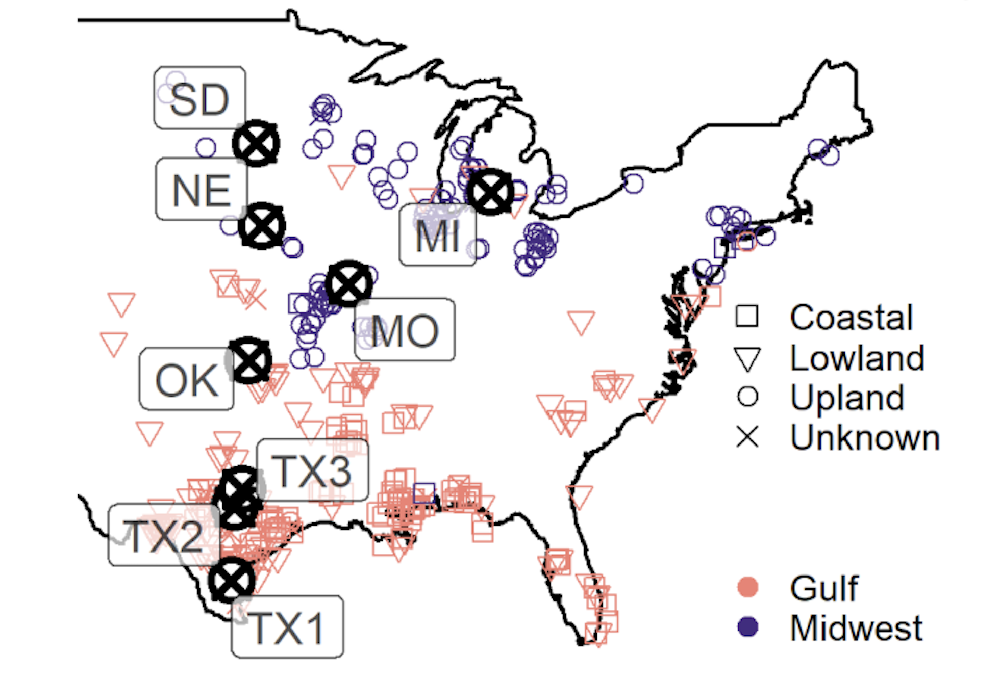
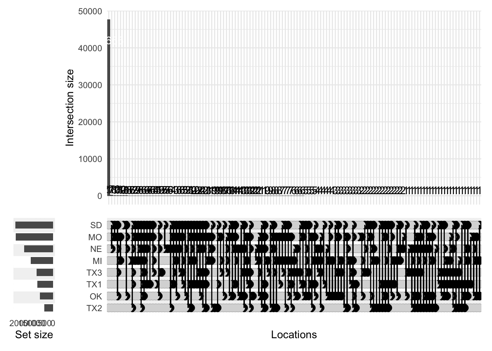
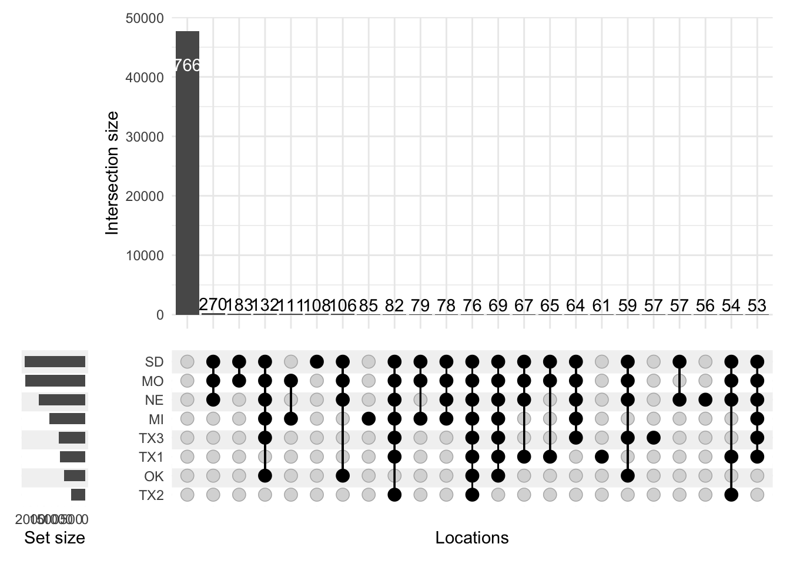
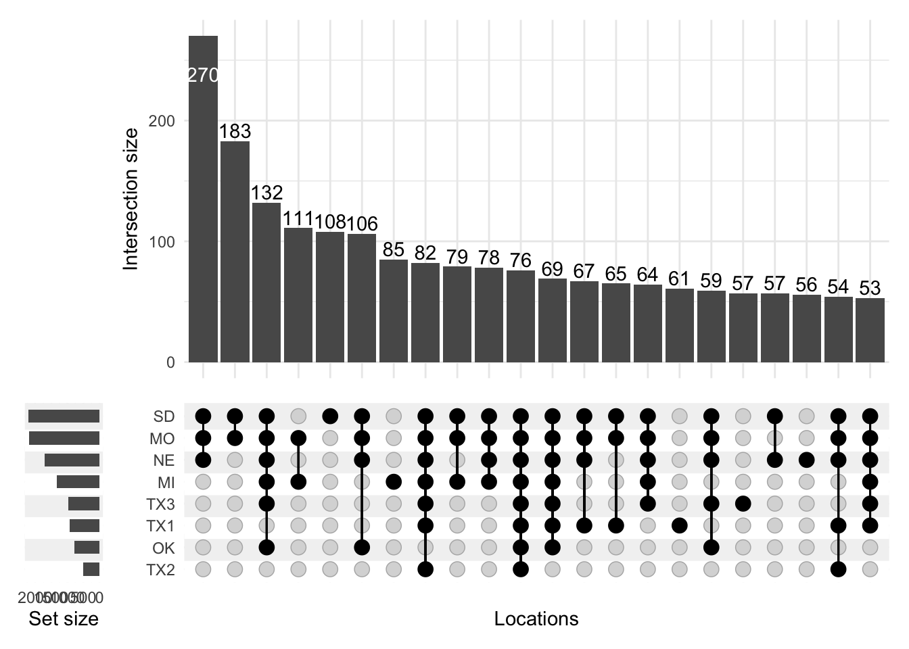
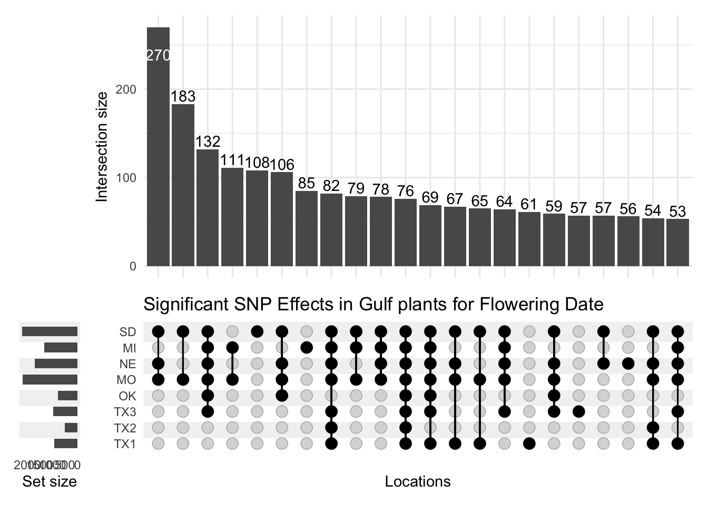

UpSet plots are a great way to visualize overlaps between datasets with more than three and less than about 30 sets. These plots are a clear way to scale up the visualization of overlaps from a Venn diagram, which usually don’t scale with clarity beyond three or four sets.
As such, UpSet plots are a great way to visualize overlaps between significant associations from multiple genome-wide associations (GWAS). These plots can visualize the genomic regions, or SNPs, that are significantly associated in one or more GWAS location, year, or trait. I use these plots as a preliminary visualization of overlaps between GWAS. Then, promising combinations of overlaps can be followed up with more detailed statistical analyses.
── Attaching core tidyverse packages ──────────────────────── tidyverse 2.0.0 ──
✔ dplyr 1.1.4 ✔ readr 2.1.5
✔ forcats 1.0.0 ✔ stringr 1.5.1
✔ ggplot2 3.5.1 ✔ tibble 3.2.1
✔ lubridate 1.9.3 ✔ tidyr 1.3.1
✔ purrr 1.0.2
── Conflicts ────────────────────────────────────────── tidyverse_conflicts() ──
✖ dplyr::filter() masks stats::filter()
✖ dplyr::lag() masks stats::lag()
ℹ Use the conflicted package (<http://conflicted.r-lib.org/>) to force all conflicts to become errors
I am going to make an UpSet plot using genomic regions that have a significant effect on flowering time in switchgrass in at least one location. These genomic regions are ones I have been analyzing as part of a revision to this paper.

Figure 1: Plants (colored shapes) & Locations (bold block circles with X’s) used to get genetic effects on plant flowering date. Paper tl;dr: hundreds of switchgrass plants were collected from the locations of the colored shapes, cloned, and grown at eight common gardens where their flowering date was measured (gardens are bold black circles with X’s).
First, I am going to load a supplementary dataset from the current revision of that paper.
Dataset Info
The dataset loaded here is a dataframe of SNP effects on flowering date for the Gulf subpopulation of switchgrass (the pink points on Figure 1. In this dataset, the first two columns have the following definitions:
Marker: The SNP marker in the format Chromosome_Position
log10BF: log10(Bayes Factor) of the significance of the marker effect in the model jointly estimating SNP effects
The remaining column names follow the pattern Effect_[Mean/StandardError/lfsr]_[Subpopulation]_[Phenotype]_[Garden], where Mean and Standard Error are estimates of the effect mean and standard error, lfsr is the local false sign rate statistic for the effect, and [Subpopulation], [Phenotype], and [Garden] follow the conventions of Figure 1.
effects <-read_csv(file ="Effects_dataset.csv")
Rows: 50490 Columns: 26
── Column specification ────────────────────────────────────────────────────────
Delimiter: ","
chr (1): Marker
dbl (25): log10BF, Effect_Mean_Gulf_FloweringDate_TX1, Effect_StandardError_...
ℹ Use `spec()` to retrieve the full column specification for this data.
ℹ Specify the column types or set `show_col_types = FALSE` to quiet this message.
Then, I will transform this dataset so that it is suitable for the Upset plot visualization. To do this, I need to add a set of new logical columns to the dataframe. Each column corresponds to one group in the Upset plot and the TRUE/FALSE value present in each row is the readout of whether that Marker is in that group.
I want to plot SNPs with significant effects at more than one location. The ‘lfsr’ columns in this dataframe contain the p-values for the significance at each location. So I will create new columns based on the lfsr columns by transforming the continuous p-value into a logical vector, by assessing if each p-value is above or below a 5% threshold. I give each new column the abbreviation for the location’s name as in Figure 1, as these names will appear in the Upset visualization.
Next, I define a vector of column names that correspond to the groups I want to include in the Upset plot.
locations <-colnames(effects)[3:10]
Now I have the data in the right format for plotting, I make the Upset visualization, then iterate on it to improve it:
p <-upset(effects, locations, name ="Locations", width_ratio =0.1)p

This first visualization has many, many combinations of groups, most of which have very small numbers of significant effects. Let’s make this plot easier to read by focusing on the groups with more effects, by setting the set size parameter min_size = 50:
p <-upset(effects, locations, name ="Locations", width_ratio =0.1, min_size =50)p

By far the most common group is one where the effect is not significant at any location. These aren’t interesting effects, so I remove this set from the visualization by filtering to include only sets with at least one member (by setting the set parameter min_degree = 1):
p <-upset(effects, locations, name ="Locations", width_ratio =0.1, min_size =50, min_degree =1)p

The plot above is definitely an improvement. However, by default, Locations are sorted by set size, so locations with the largest number of significant effects - SD and MO - are at the top. Thinking back to Figure 1, the locations actually fall along a latitudinal gradient, so it would make more sense to retain this order for the locations in this plot. I adjust this by setting sort_sets=FALSE:
p <-upset(effects, locations,name ="Locations",width_ratio =0.1, min_size =50, min_degree =1, sort_sets =FALSE) +ggtitle("Significant SNP Effects in Gulf plants for Flowering Date")p

To my eye, this Upset plot is clear enough for preliminary analysis. Several features of the data become apparent using this visualization:
First, more SNP marker effects are significant at the northern locations than at the southern locations.
There is a possible superset in this data, in that the northernmost four sites seem to have distinct sets of significant markers compared to the southern four locations. This is surprising because the plants I plot here all come from the southern part of the range of switchgrass (they are the pink shapes in Figure 1).
There is also a sizeable group of markers that affect flowering date at most or all locations, though this group is smaller than the group of markers that affect flowering date at the northern locations.
Citation
BibTeX citation:
@online{macqueen2024,
author = {MacQueen, Alice},
title = {Visualize {Multiple} {Overlaps} with {UpSet}},
date = {2024-05-20},
url = {https://alice-macqueen.github.io/posts/2024-05-20-upset/},
langid = {en}
}
![]()